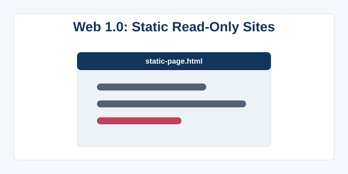
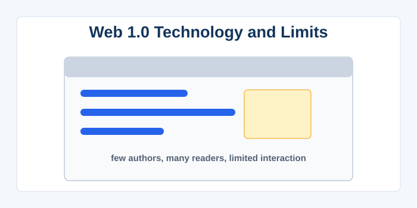
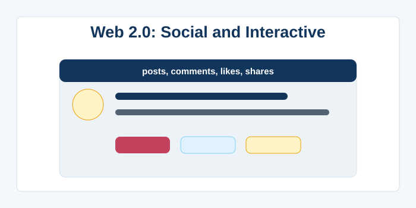
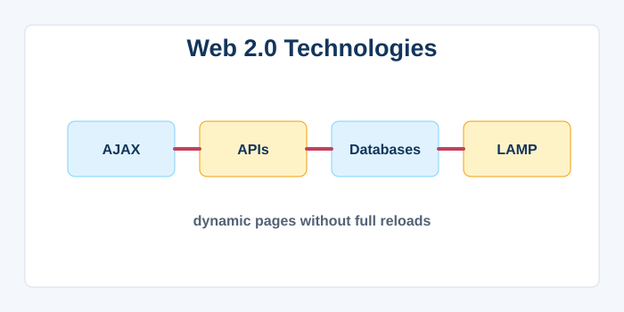
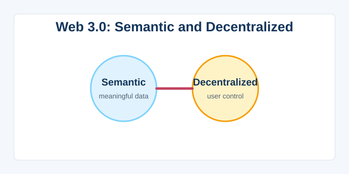
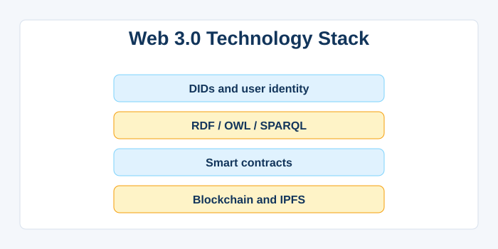
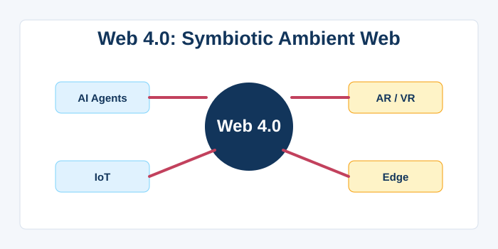
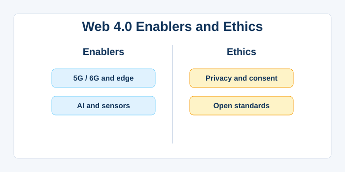

Web Versions: 1.0, 2.0, 3.0, and 4.0
Web 1.0 – The Read‑Only Static Web (1989‑2004)
Web 1.0 refers to the earliest era of the World Wide Web, spanning from its invention in 1989 until around 2004, when sites were predominantly static and read‑only. During this phase, websites consisted of simple, hand‑coded HTML pages connected by hyperlinks, with no interactivity beyond following a link. Content was created by a small number of authors and webmasters, while the vast majority of users were passive consumers of information. The underlying technologies were basic: HTML for structure, early versions of CSS for styling, and occasionally JavaScript for minor enhancements like mouse‑over effects. Websites resembled digital brochures or encyclopaedias, with company “About Us” pages, personal homepages, and university research portals. Search engines like AltaVista and Yahoo! catalogued the web by keyword and directory, but there was no social dimension or user feedback. E‑commerce was in its infancy, with companies like Amazon and eBay launching simple storefronts where you could browse and buy, but without recommendations or reviews. Connection speeds were slow (dial‑up modems), so pages were light, and design was constrained by bandwidth. The term “Web 1.0” was coined retroactively after the advent of Web 2.0 to describe this foundational, static phase. Web 1.0’s key characteristic was that it democratised access to information; suddenly, anyone with a connection could read news, research topics, or learn about a company from anywhere in the world, but they could not easily contribute or interact. This era laid the infrastructure and standards (HTTP, URL, HTML) that all later versions of the web would build upon, and its simplicity made the web resilient and interoperable. Even today, many informational sites (e.g., government portals, documentation) follow the Web 1.0 paradigm, proving its lasting value.

Web 1.0 – Technology and Limitations
Technologically, Web 1.0 relied on a simple client‑server model where the server delivered pre‑existing HTML files, and the browser displayed them. There were no dynamic server‑side languages as we know them; early CGI scripts (Perl) could generate content, but it was the exception, not the rule. Personalisation was almost non‑existent—each visitor saw the exact same page. User interfaces were spartan, often using default blue links, tables for layout, and GIF images. E‑mail was the primary means of communication; the web itself was not a medium for conversation. The lack of user accounts meant no shopping carts (until cookies were adopted) and no persistent logins. The web was like a massive library where millions could read but very few could write. This had the advantage of simplicity and security; there was no comment spam, no social media bullying, and no misinformation epidemics because content was curated by experts. However, the web was also exclusionary; publishing a website required technical knowledge of HTML and access to a web server. The digital divide was stark, and marginalised voices rarely appeared. As broadband became more common and tools like blogs (LiveJournal, Blogger) emerged, the stage was set for the transition to a more participatory web. The limitations of Web 1.0 are what ultimately spurred the innovations that led to Web 2.0’s explosion of user‑generated content and interactivity. It was an essential first draft of a connected world, proving the concept and building the backbone for everything that followed.

Web 2.0 – The Social, Interactive Web (2004‑2015)
Web 2.0 represents the shift from static pages to dynamic, interactive platforms where users not only consume content but also create, share, and collaborate. The term was popularised by Tim O'Reilly in 2004 to describe a new generation of web applications that treated the web as a platform for participation. Core characteristics include user‑generated content, social networking, folksonomies (tagging), and rich web interfaces powered by AJAX (Asynchronous JavaScript and XML). Websites became applications: Facebook, YouTube, Wikipedia, Flickr, and Twitter allowed everyday users to publish text, photos, and videos without any coding knowledge. The rise of APIs enabled mashups, where data from multiple sources (like Google Maps and real‑estate listings) could be combined into new services. Blogs and wikis democratised publishing, and the “wisdom of the crowd” concept suggested that collective intelligence could rival expert authority. Advertising and monetisation models shifted from display ads to targeted advertising based on personal data, raising early privacy concerns. Web 2.0 also brought about the “long tail” effect, allowing niche content to find a global audience. While the term is somewhat marketing‑driven and has faded as the web became inherently dynamic, the fundamental transformation—users as participants, not just spectators—is Web 2.0’s lasting legacy. The boundaries between Web 2.0 and later versions are blurry, but the era undeniably established the internet as a social, collaborative space where anyone can have a voice and build an online community.

Web 2.0 – Technologies and Business Models
Technologically, Web 2.0 was enabled by widespread broadband, server‑side scripting languages (PHP, Python, Ruby), databases that handle huge concurrent users, and AJAX that made pages feel responsive without full reloads. Rich Internet Applications (RIAs) using Flash, Flex, or early JavaScript frameworks (jQuery) provided desktop‑like experiences. Tagging replaced rigid taxonomies, making content discoverable through folksonomy rather than strict hierarchies. RSS feeds and podcasts allowed content to be syndicated and consumed across platforms. The “network effect” became a central business principle: platforms become more valuable as more people use them, leading to winner‑take‑all markets. Companies like Google and Facebook built massive data centres and proprietary algorithms to process and monetise user data, offering services that appeared free but were paid for by targeted advertising. This ad‑based model made the web’s most popular services accessible to billions, but it also concentrated immense power in a few corporations and incentivised surveillance capitalism. Open‑source software like Linux, Apache, MySQL, and PHP (the LAMP stack) powered much of the Web 2.0 boom, lowering barriers for startups. RSS feeds and APIs allowed a level of interoperability that Web 1.0 never had, although many platforms later closed off their APIs to lock in users. The era also saw the rise of content management systems (WordPress, Joomla) that let non‑technical users run dynamic sites. In summary, Web 2.0’s technologies and business models turned the internet into a living, breathing ecosystem of interaction, commerce, and community, but also sowed the seeds of privacy, centralisation, and misinformation challenges that the next web iterations would try to address.

Web 3.0 – The Semantic, Decentralised Web (Emerging)
Web 3.0 is a broad vision for the next stage of the web that aims to make data machine‑readable, context‑aware, and decentralised, often associated with the “Semantic Web” proposed by Tim Berners‑Lee. The idea is to add meaning (semantics) to web content using standards like RDF, OWL, and SPARQL, so that software agents can understand, combine, and act on the information without human intervention. For example, a semantic search query could understand that “What was the budget of the 2010 sci‑fi movie with Leonardo DiCaprio?” refers to Inception, cross‑referencing multiple databases. This promises more intelligent personal assistants, automated data integration, and enhanced search results. In parallel, the term “Web3” (often capitalised differently) has been co‑opted by the blockchain community to describe a decentralised web where users control their own data, identity, and assets via cryptocurrencies, decentralised autonomous organisations (DAOs), and self‑sovereign identity. In the Web3 vision, platforms are replaced by protocols; no single company owns your social graph or financial transaction history. Decentralised apps (dApps) run on peer‑to‑peer networks like Ethereum, and smart contracts automate agreements without intermediaries. The two visions—semantic and decentralised—are not mutually exclusive, and the true Web 3.0 may blend semantic technologies for better data understanding with decentralised architectures for user empowerment. Key challenges include scalability, energy consumption of blockchain technology, and the difficulty of representing human knowledge in formal ontologies. Web 3.0 is still in its infancy, with many experiments but limited mainstream adoption. It represents a philosophical shift from the platform‑dominated Web 2.0 toward a more intelligent, user‑centric internet where value is distributed, not concentrated.

Web 3.0 – Core Technologies and Criticisms
The Semantic Web stack relies on technologies like RDF (Resource Description Framework) to express data as triples (subject‑predicate‑object), ontologies to define domain concepts, and SPARQL to query these distributed datasets. Linked Data principles encourage linking these triples across the web, creating a giant global knowledge graph. Projects like DBpedia and Wikidata are early successes, converting Wikipedia into structured data. Meanwhile, blockchain‑based Web3 uses distributed ledgers, public‑key cryptography, and consensus mechanisms to create trustless environments. Smart contracts, written in languages like Solidity, automate agreements and run exactly as programmed. Decentralised file storage (IPFS, Filecoin) replaces centralised servers. Critics argue that the Semantic Web has been “the future” for 20 years and has been overtaken by machine‑learning approaches that extract meaning from unstructured text without needing explicit ontologies. The blockchain‑centric Web3 faces scrutiny for speculative bubbles, high gas fees, and limited real‑world utility. Moreover, some argue that true decentralisation is extremely difficult and tends to reconcentrate (e.g., mining pools, large token holders). Despite these criticisms, Web 3.0 concepts have already influenced the modern web: structured data (Schema.org) embedded in HTML improves SEO and rich snippets; federated social networks like Mastodon use ActivityPub; and self‑sovereign identity systems like W3C’s DID are gaining traction. Web 3.0 is not a single product but a set of ongoing movements to make the web more intelligent and less reliant on centralised intermediaries. Whether it succeeds depends on solving the tension between the unstructured, messy reality of human content and the need for machine processability, all while providing compelling user experiences that can compete with polished Web 2.0 platforms.

Web 4.0 – The Symbiotic, Ambient Web (Future Vision)
Web 4.0 is a forward‑looking concept that imagines a deeply integrated, symbiotic relationship between humans and the web, where digital and physical realities merge seamlessly. Also called the “Symbiotic Web,” it envisions ubiquitous connectivity through the Internet of Things (IoT), ambient intelligence, and always‑on personal assistants. In this era, the web is not something you “go to” via a screen; it is embedded in the environment—in wearable devices, smart homes, autonomous vehicles, and even brain‑computer interfaces. Augmented reality (AR) overlays digital information onto the physical world, while virtual reality (VR) provides fully immersive experiences, collectively forming the “metaverse” where work, play, and socialising happen in hybrid spaces. Artificial intelligence becomes a core component, anticipating user needs, automating complex decisions, and managing personal data autonomously. The Web 4.0 experience is highly personalised and context‑aware, adjusting based on location, emotional state, and intent. Agents negotiate on behalf of users, booking appointments, managing finances, and filtering information without explicit instructions. This vision requires massive advances in edge computing, low‑latency networks (5G/6G), battery technology, and ethical AI governance. Privacy and security challenges are immense; the web becomes an extension of the human nervous system, so breaches could have profound, possibly physical, consequences. Web 4.0 also carries the hope of true inclusivity, where digital services are accessible to all, regardless of language, disability, or technical literacy, through adaptive interfaces. It is the ultimate realisation of the web’s original promise: a universal information space that connects not just documents, but people, objects, and intelligence in a fluid, intuitive manner.

Web 4.0 – Enablers and Ethical Considerations
The technological enablers of Web 4.0 are rapidly emerging: 5G and beyond provide the low‑latency, high‑bandwidth pipes; edge computing brings processing power closer to the user; AI models like large language models and computer vision understand raw sensory data; and advanced sensors collect real‑world information. The development of the Spatial Web (Web 4.0) builds on WebXR standards, allowing browsers to access AR/VR hardware, while digital twins create real‑time virtual replicas of physical objects. However, the ethical challenges are as vast as the technical ones. When the web is integrated into your daily life at a sensory level, the potential for manipulation, surveillance, and addiction multiplies. Who controls the algorithms that filter what you see, hear, and even feel? How is consent obtained when interactions are ambient and passive? The digital divide could widen into a “symbiotic divide,” where those who cannot afford or choose to avoid this integration are left out of social and economic life. Data ownership becomes even more critical; the web must be architected to give users control over the immense streams of personal data generated by their bodies and environments. Early glimpses of Web 4.0 can be seen in products like Apple’s Vision Pro, always‑on AI assistants, and smart cities that auto‑regulate traffic and energy. To realise the positive potential of Web 4.0, society will need robust legal frameworks, open standards, and a cultural commitment to human‑centred design. If done right, Web 4.0 could usher in an era of unprecedented convenience, creativity, and interconnectedness; done poorly, it risks becoming a dystopian panopticon. The blueprint for this future is being drawn now, making responsible innovation the central theme of the next web evolution.
